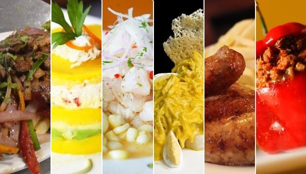
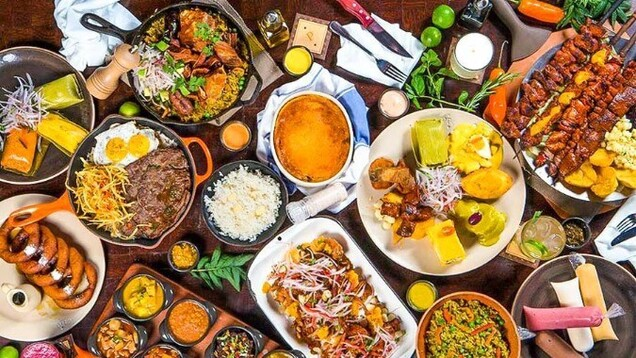
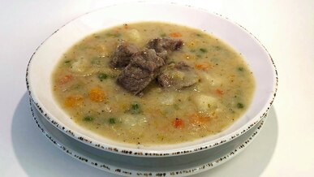
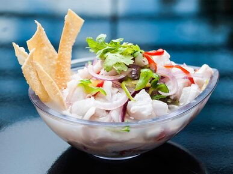
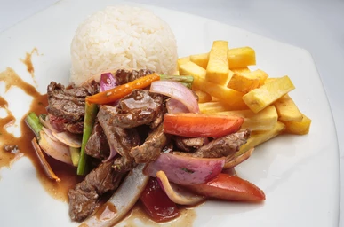
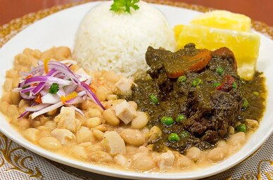
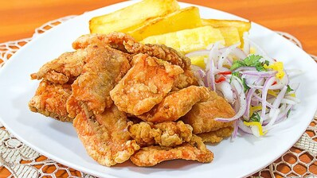
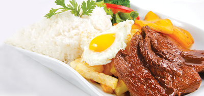
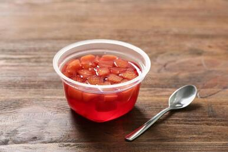

¡Rica y Sabrosa!
Restaurante
Restaurante comprometido con tu paladar
Solo pida y se ós dará
¡Entradas!
Elija lo que su paladar desea
- Sopa de Sémola
- Ceviche
- Ninguno

La sopa de Sémola contiene los siguientes ingredientes:
"Caldo o agua hervida, un poco de oregano, sal y pimienta semola!, queso parmesano y por ultimo papita frita""seleccion abajo si desea este plato"

El Ceviche contiene los siguientes ingredientes:
El primer ingrediente es pesado, cebolla picada, aji limo picado, jugo de limones, ajo siba o molido, sal,camote sancochado y por ultimo una hoja de lechuga fresa"seleccion abajo si desea este plato"
"seleccion abajo si no desea ningun plato"
¡Segundos!
- Lomo Saltado
- Seco de Res
- Chicharrón de Pescado
- Bisteck Montado
- Frutas
- Gelatinas
- Ninguno

El Lomo Saltado contiene los siguientes ingredientes:
Tiras cortadas de res, diente de ajo.sal y pimienta, aceite vegetal, cebolla morada cortada en rodajas gruesas, tomate,vinagre y papas fritas"seleccion abajo si desea este plato"

El Seco de Res contiene los siguientes ingredientes:
Carne de res, cebollas picadas, pimienta,comino,aji mirasol molido, ajo molido, aji amarillo molido, palillo ,culantro molido, alverjas cocidas, papa picada en cuadro, zanahorias picadas en rodajas, sal y aceite vegetal."seleccion abajo si desea este plato"

El Chicharrón de Pescado contiene los siguientes ingredientes:
trucha fresca,maicena o harina de maiz, ajo en polvo, romero seco, sal, pimienta,zumo de limon y aceite de oliva."seleccion abajo si desea este plato"

El Bisteck Montado contiene los siguientes ingredientes:
Bistec de terneta,dientes de ajo picado,arroz graneado,papas cortadas y freidas,platano de freir, huevo frito, aceite vegetal, sal y pimienta."seleccion abajo si desea este plato"
¡Postres!
Entre las frutas pueden llegarle una de las siguientes:
1 naranja
1 manzana
1 mandarina

Entre las Gelatinas pueden llegarle uno de los siguientes sabores:
sabor a fresa
sabor a chocolate
sabor a naranja
Presione el botón "elegir este" si no desea ningun Postre